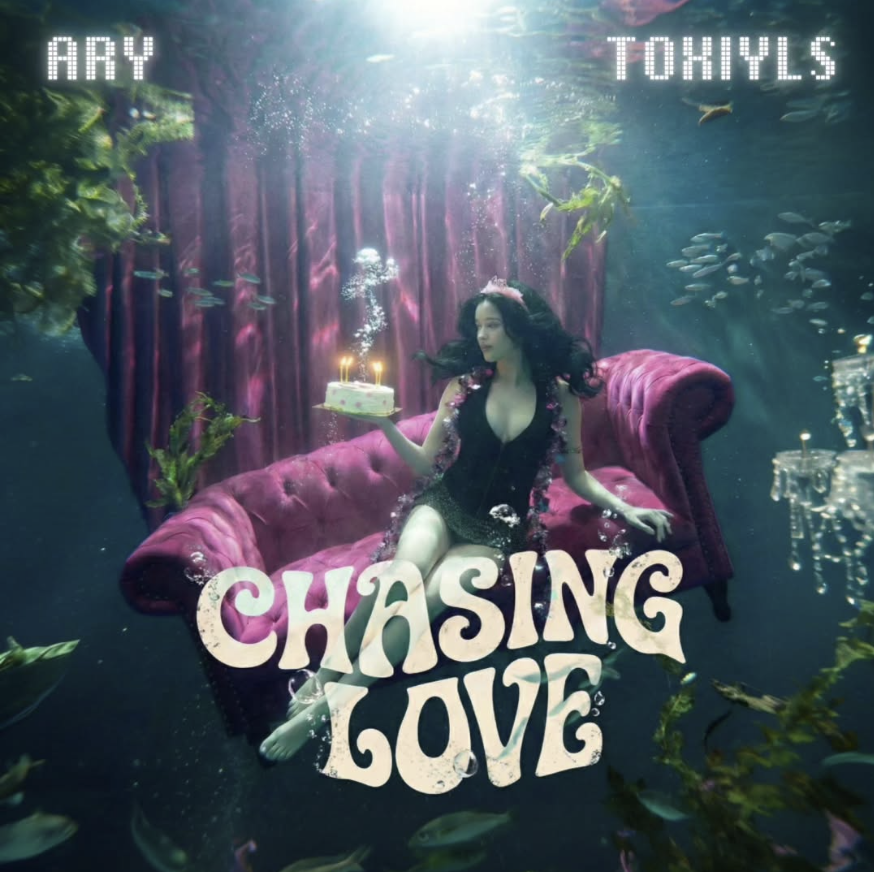

The Reel, In Stills
Actual output, not just descriptions.
Each tile is wired for a real image — drop yours in and the placeholder disappears automatically.

＋
ANANDAM-01.JPGStage design / key art
AnandamSTAGE & KEY ART

＋
FEATURE-FILM-STORYBOARD.JPGOne of 64 shots
Feature FilmSTORYBOARD FRAME

＋
AEROPLANE-RICE.JPGLogo / packaging concept
Aeroplane RiceREBRAND / PACKAGING

＋
INDEPENDENCE-CAMPAIGN.JPGFestive campaign concept
IndependenceCAMPAIGN KEY ART

＋
HYPHEN-SKINCARE.JPGPositioning deck visual
Hyphen SkincareBRAND POSITIONING

＋
MUSIC-VIDEO.PNGProduction still
Music VideoON-SET / STILL